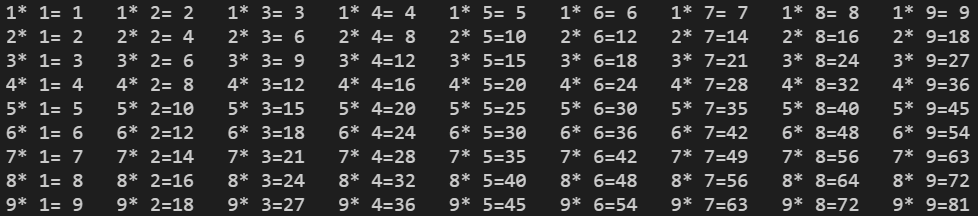
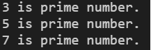
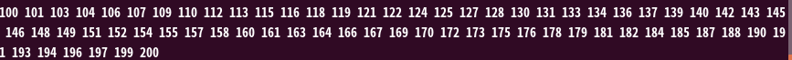
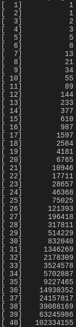
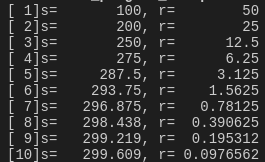

第五章 循环结构程序设计
5.1 while循环
例5.1：求：\[\sum_{n=1}^{100}n = 1+2+...+100 \]
5.1 while循环
- 格式：
while(条件表达式）语句;
- 注意，上面的
条件表达式为真（非0）则执行循环(语句)，若为假(0)则退出循环
- 注意，上面的
语句;只能是一条语句，如果需要多条语句，则要用{ }来组成复合语句，如下例：
5.2 do...while循环
例5.2：从键盘输入一个正数，求出其开方，若是负数则重新输入。
5.2 do...while循环
- 格式：
do 语句; while(条件表达式);
- 注意，上面的
条件表达式为真（非0）则执行循环(语句)，若为假(0)则退出循环
- 注意，上面的
语句;只能是一条语句，如果需要多条语句，则要用{ }来组成复合语句，如下例：

5.3 for循环
- 格式：
for(表达式1;表达式2;表达式3) 语句1;
- 上面的
表达式1一般作为初始化，仅在循环开始之前执行一次, 如果有多个变量初始化，可以用,来隔开；
- 上面的
表达式2作为循环条件判断，其计算结果若为真(非0)，则执行循环语句语句1，若为假(0)则退出循环
- 上面的
表达式3在每次循环结束后都会被执行，注意是表达式而不是语句，所以最后不能加;
- 注意，上面的
语句1;只能是一条语句，如果需要多条语句，则要用{ }来组成复合语句
for语句可以等效于while语句, 如下例：
5.3 for循环
for(表达式1;表达式2;表达式3) 语句1; 这里的三个表达式都可以省略，但是;不能省略, 如下例：
5.3 for循环
for语句的灵活性可以让我们把几乎所有的循环内容都写在for的头部（表达式1-3），但是很不直观，而且不利于调试，所以不建议这样做。
5.4 循环的嵌套
- 循环的嵌套, 指循环中可以包含另一个循环，C语言中三种循环都可以互相嵌套；
- 注意循环的包含范围，建议用缩进来帮助区分（注意不是强制）
- 例5-4：打印0-10以内的素数

5.5 改变循环的流向
- 用
break提前终止循环
- 例5-5：输入任意数，负数退出，正数求平方根
5.5 改变循环的流向
- 用
continue提前结束本次循环
- 例5-6：输出100--200之间不能被3整除的整数

5.6 循环程序举例
- 例5-7：用\(\frac{\pi}{4}\approx 1-\frac{1}{3}+\frac{1}{5}-\frac{1}{7}\cdots\)求\(\pi\)的近似值
5.6 循环程序举例
- 例5-8：求Fibonacci数列的前40个数，公式：\[\left\{\begin{aligned}F_1 &=1 &(n=1)\\F_2 &=1 &(n=2)\\F_n &=F_{n-1}+F_{n-2} &(n\ge 3)\end{aligned}\right.\]

5.6 循环程序举例
- 例5-9：输入两个正整数m和n，求二者的最大公约数和最小公倍数
5.6 循环程序举例
- 例5-10：输出所有水仙花数，即一个三位数，各数字立方和等于该数本身，比如\(153=1^3+5^3+3^3\)
结果：153 370 371 407
5.6 循环程序举例
- 例5-11：有一个球，从100m的高度自由落下，每次落地后反跳回原高度的一半，再落下，再反弹，求第10次落地时，已经经过多少距离，第10次反弹有多高？
- [解题分析]：
- 第1次落地，经过距离\(s_1=100\), 反弹\(r_1=50\)
- 第2次落地，经过距离\(s_2=100+50*2=s_1+r_1*2\), 反弹\(r_2=\frac{50}{2}=25=\frac{r_1}{2}\)
- 第3次落地，经过距离\(s_3=100+50*2+25*2=s_2+r_2*2\), 反弹\(r_3=\frac{25}{2}=12.5=\frac{r_2}{2}\)
- 第n次落地，经过距离\(s_n=s_{n-1}+r_{n-1}*2\), 反弹\(r_n=\frac{r_{n-1}}{2}\)

5.6 循环程序举例
- 例5-12：用迭代法求\(x=\sqrt{a}\),其公式为\(x_{n+1}=\frac{1}{2}\left(x_n+\frac{a}{x_n}\right) \),要求其前后两次求出来的x的差的绝对值小于\(10^{-5}\)
5.6 循环程序举例
- 例5-13：用牛顿迭代法求\(2x^3-4x^2+3x-6=0\)的根,要求其前后两次求出来的x的差的绝对值小于\(10^{-5}\)
- [牛顿迭代法]：
- 设有任意函数\(f(x)\)N阶可导, 对其在\(x_0\)处进行一阶泰勒展开，\(f(x)\approx f(x_0)+(x-x_0)f'(x_0)\),\[\left.\begin{aligned}令 f(x)&=0\\ \Rightarrow f(x_0)+(x-x_0)f'(x_0) &=0\\ \Rightarrow f(x_0)+xf'(x_0)-x_0f'(x_0) &=0\\ \Rightarrow xf'(x_0)&=x_0f'(x_0)-f(x_0)\\
\Rightarrow x&=x_0-\frac{f(x_0)}{f'(x_0)}\end{aligned}\right.\]
- 由上面的公式可得，当在\(x_0\)(可由用户输入指定)开始，反复利用上面的公式进行迭代，最后可以得到一个根的近似值（不是全部值），可以通过前后两个近似值的差值来控制精度。
- 对于本例，\(f(x)=2x^3-4x^2+3x-6, f'(x)=6x^2-8x+3\)